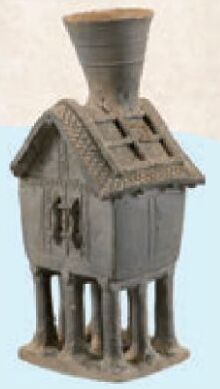
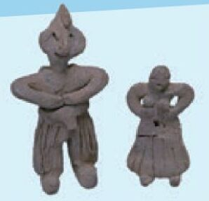
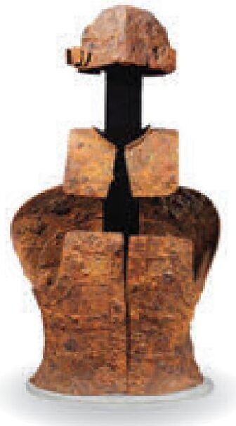

초등 5학년 사회 · AI와 함께하는 역사 탐구
유물로 살펴보는
삼국과 가야의 생활
삼국과 가야의 생활
보고, 묻고, 확인하며 우리 모둠의 역사관을 만들어요
 황남대총 북분 금관 · 신라
황남대총 북분 금관 · 신라
집 모양 토기 · 가야
신라 토우
철 갑옷 · 가야열 번의 수업, 하나의 역사관
발견 → 탐구 → 제작 → 나눔, 10차시 흐름이 한 화면에 모두 들어 있어요.
01
LOOK생활의 단서에서
탐구 질문으로
탐구 질문으로
02
LOOK궁금증 조사하고
설명 확인하기
설명 확인하기
03
EXPLORE출처 있는
조사표 만들기
조사표 만들기
04
EXPLORE사람과 AI의
분류 비교
분류 비교
05
EXPLORE역사 관계도
만들기
만들기
06
ACT역사 낱말
살펴보기
살펴보기
07
ACT전시 순서
설계하기
설계하기
08
ACT해설 쓰고
검증하기
검증하기
09
PRACTICE서로 확인하고
고치기
고치기
10
PRACTICE전시하고
돌아보기
돌아보기
1차시 · 관찰하기
교과서 속 유물,
크게 보고
단서를 찾아요
벽화, 수저, 집 모양 토기, 토우… 여섯 자료를 칠판 화면에 띄워 함께 관찰해요.
2차시 · 조사하고 검증하기
이 문장,
정말 사실일까?
교과서와 공식 기관 자료를 찾아 사실 · 거짓 · 판단하기 어려움을 스스로 가려요.
교과서 자료실
두 자료를
나란히 비교해요
비상교육 사회 5-2와 연계된 자료 14종. 나라별 · 주제별로 골라 봐요.
고구려백제신라가야
4차시 · 사람과 AI
우리 분류 vs
AI 분류
같은 기준으로 나눠도 결과가 달라요. 왜 다른지 근거를 들어 따져 봐요.
AI는 답이 아니라, 비교할 친구
5 · 6차시 · 분석하기
낱말을 세고,
관계도로 이어요
“확인한 사실”과 “우리의 추측”을 구분해서 연결해요.
7~10차시 · 우리 역사관
근거를 담은
우리 모둠
역사관 완성
해설마다 출처를 확인하고, 관람용 파일로 내려받아 서로 관람해요.
예시 모둠의 가상 작품
선생님을 위해
수업 준비는
가볍게
40분 운영 흐름, 차시별 지도안, 인쇄용 A4 활동지까지 함께 제공해요.
설치 없음로그인 없음기기에 자동 저장
M
MOAKIT 5class삼국 · 가야 생활 탐구실
AI는 돕고, 판단은 우리가
초등 5학년 · AI × 사회 · 10차시
설치 없이 브라우저에서 바로 · 교실 큰 화면과 태블릿 모두 OK